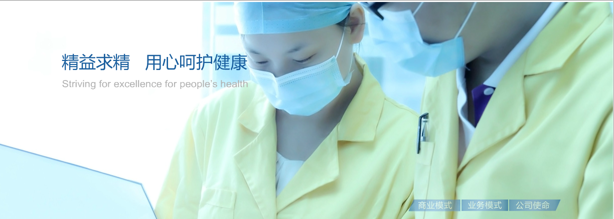
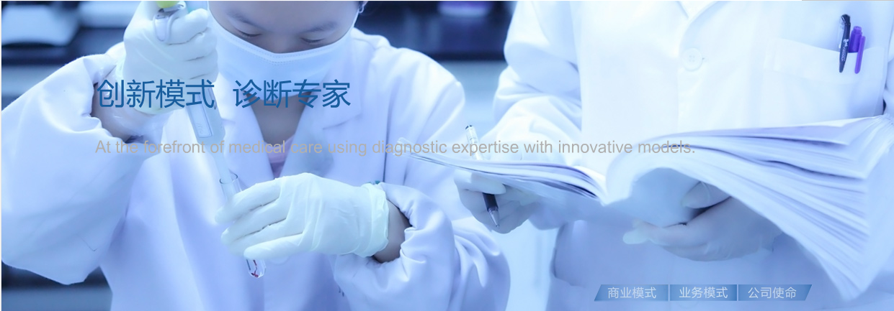

浙江迪安诊断技术股份有限公司（简称“迪安诊断”或“迪安”）成立于2001年，是以提供诊断服务外包为核心业务的独立第三方医学诊断服务机构，凭借具有迪安特色的“服务+产品”一体化商业模式成为行业领先者，并于2011年7月率先上市（股票代码：300244）。
作为迪安主营业务的独立医学实验室，是涵盖专业冷链物流、高新检验技术、IT技术等新型现代服务业态的全新运营模式，属于现代科技型服务业。通过集中检验、集约经营和连锁化发展，可以提高公共卫生资源利用率，优化医学检验资源，降低医疗费用并促进检验技术发展。
目前，迪安依托全国连锁化医学实验室的平台，致力于技术创新与商业模式创新，业务涉及司法鉴定、诊断产品销售、诊断技术研发、CRO等领域，并不断完善 “服务+产品”一体化的专业服务体系，创造诊断项目齐全、标本流程高效、诊断结果准确、咨询服务权威的第三方医学诊断服务模式，形成了整合营销竞争优势，确定了全国连锁化、规模化复制的扩张策略，通过纵向与横向的有效资源整合，加快全国布局速度，启动了公共检测平台的多服务领域拓展与上下游产业链的整合式发展战略。
迪安拥有由硕士、博士及国内外医学诊断领域顶尖学者组成的专家团队，与罗氏诊断、法国梅里埃、NMS、美国比尔/梅琳达•盖茨基金会等世界一流企业及机构，复星医药、温州医学院、浙江清华长三角研究院生物技术与医药研究所等国内知名企业、院校、研究院等形成战略合作，是“国家科技支撑计划”多项课题承担单位。旗下杭州迪安医学检验中心、南京迪安医学检验所为国家高新技术企业。
迪安诊断，立志成为“提供医学诊断外包服务一体化解决方案的领导者”。
